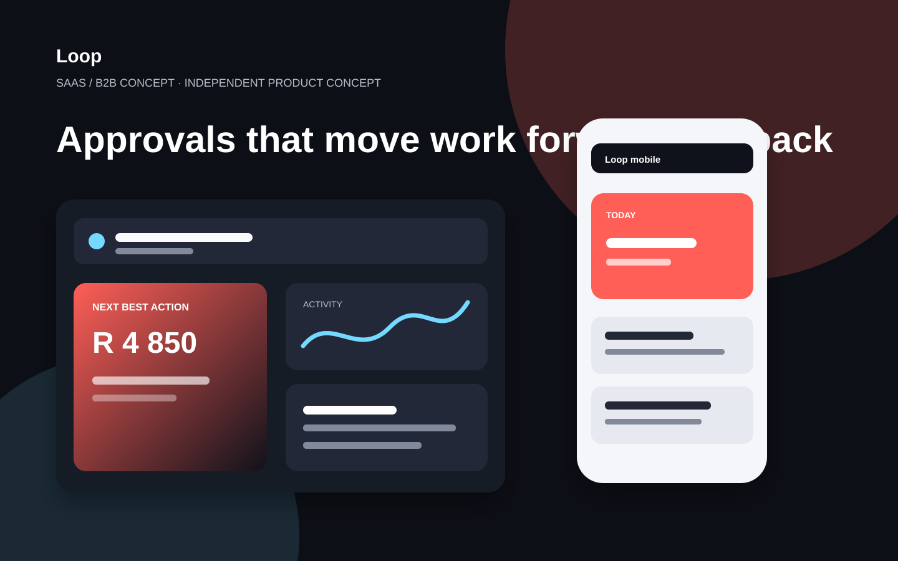

Independent case study · SaaS / B2B concept
Approvals that move work forward, not back into chat.
A B2B approval workspace for teams that need decisions, accountability and an auditable record without the spreadsheet chase.

Original interface concept created for this portfolio case study — visual product artefacts, not AI imagery.
A specific problem, not a feature list.
Approval work usually fragments across email, meetings and chat. Loop gives every request an owner, context, decision state and a visible next move.
From question to testable direction.
The case study follows an end-to-end product process designed to make assumptions visible before a build begins.
Design principles that shape the flow.
- Start with the decision, not the form: what needs approval and who needs enough context to decide?
- Give requesters a predictable status and approvers a focused queue.
- Define status, empty and exception states early so the system behaves clearly outside the happy path.
Built for a real frontend team.
The interface direction defines responsive hierarchy, reusable patterns and explicit interaction states. A production handoff would add component specifications, content rules, accessibility requirements and analytics events before development starts.
What I would test next.
Recruit people who match the intended role, test the central decision in a clickable prototype, then use those observations to revise the flow before implementation. Outcomes here are deliberately presented as prototype targets — not results.
See all concepts